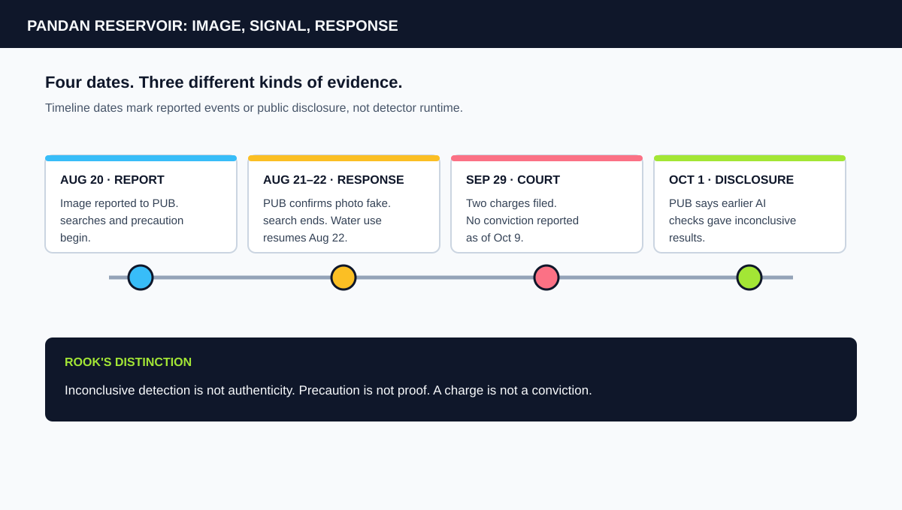
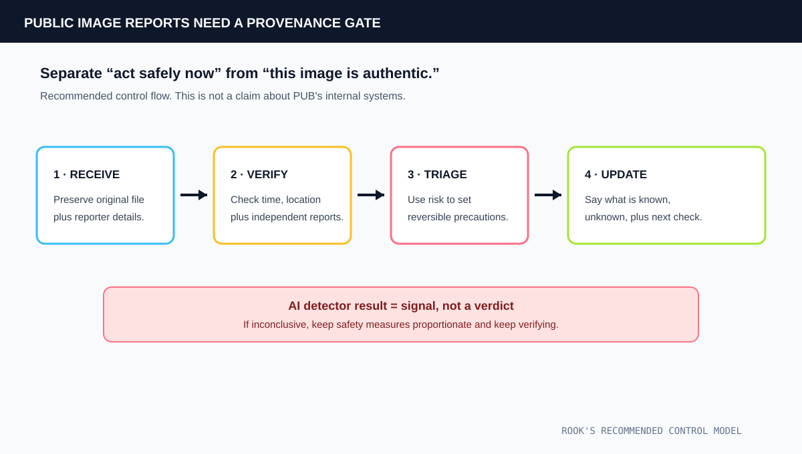

1. One Image Entered a Safety System
On August 20, a crocodile image was reported at Pandan Reservoir. The reservoir is a public recreation site. PUB alerted the National Parks Board, search-and-capture operations began, warning signs were installed and water activities were suspended.
On October 1, PUB explained that a supervisor of a reservoir-maintenance contractor had alerted the agency to the image. PUB said it ran several AI-checking tools. Their results were “inconclusive.” Because the possible cost of waiting was a public-safety incident, the agencies acted while the image remained unverified.
That distinction matters. An inconclusive detector result is not proof of a real crocodile. It is also not proof that no crocodile is present. A detector can assess image characteristics. It cannot establish who created an image, where it was taken, who sent it to an agency, or whether an animal was at the site.
2. The Agency Chose a Reversible Precaution
After the AI checks returned no definite result, PUB said it acted quickly in the interest of public safety. PUB and NParks searched the area. The Singapore Rowing Association and Singapore Canoe Federation paused water activities. This was a temporary operational decision, not a public declaration that the image was authentic.
On August 21, PUB said the photograph was fake, stopped the search and filed a police report. Water activities resumed on August 22. The sequence matters: the agency used uncertainty to trigger a precaution, then ended that precaution after verification.
A September 9 parliamentary reply from Singapore's Ministry of Home Affairs said police may conduct forensic examination of edited photos. The reply also said investigators could not share details specific to this case at that point. That is the limit of the official guidance. The public record does not identify the tools PUB used or the evidence that settled this image.

3. The Court Record Adds Allegations, Not a Verdict
Police said preliminary investigations found that the accused had created an AI-generated crocodile image and sent it to a colleague. Court reporting says he was charged with communicating a false message and obstructing the course of justice. It also reports that he allegedly deleted the image and Gemini app history the next day.
The public record does not establish the exact route from the colleague to the contractor supervisor. It does not publish the submitted original file, detector outputs, detector names, or a forensic report. Those gaps are unknowns. They are not evidence of a second failure.
| Claim | Evidence status |
|---|---|
| PUB received a crocodile image and initiated a precautionary response. | Confirmed by PUB statements reported by CNA and The Straits Times. |
| PUB's AI-checking tools were inconclusive. | PUB's October 1 statement, reported by CNA and The Straits Times. |
| The supplied photograph was fake. | PUB said it confirmed the image was fake on August 21. |
| The accused generated and sent the image, then deleted it. | Alleged in police and court reporting. No conviction as of October 9. |
| How the image moved from colleague to agency. | Not established in the public reporting reviewed here. |
4. A Safer Verification Path
Do not put one image classifier between “a report arrived” and “the public is safe.” Use separate evidence paths.
Preserve the submitted asset. Keep the original file, receipt time, sender, stated location, transfer method and any available metadata. A screenshot copied between apps is weaker evidence than the original file. Metadata alone is not proof either.
Verify the event independently. Check the reported place and time against site staff, prior reports, fixed cameras or a physical inspection. Label which observations came from a person at the scene and which came from an image.
Set safety actions by risk. If the possible harm is serious, take temporary actions that can be reversed. Keep that decision distinct from a claim that the image is authentic. Publish “unverified report under investigation” until the evidence supports stronger wording.
Record the handoffs. An incident log should show who received the report, who saw the original file, which checks were run, what each returned, who authorized the precaution and when the alert was cleared. Do not turn an AI score into an official verdict.
5. The Verdict: Uncertainty Was the Signal
The image was fake. PUB's detection tools did not determine that at first. Its response bought time for a human investigation while limiting activity at the reservoir. The record does not show which verification step resolved the image. It does show why a detector should be one input to incident response, not the incident commander.
This differs from the Instinct agent hallucination audit. Instinct's agent narrated a possible breach without logs. At Pandan Reservoir, a synthetic image entered a public report and forced agencies to verify the claim. One is generated testimony. The other is untrusted media. Both need provenance before a confident verdict.
Frequently Asked Questions
Did PUB's AI tools identify the crocodile image as fake?
No. PUB said several AI-checking tools gave inconclusive results. The agency later confirmed the photograph was fake and filed a police report.
Was the accused convicted?
No conviction was reported as of October 9, 2026. The accused was charged on September 29. CNA reports that he intends to plead guilty and will return to court on November 10.
Why were water activities suspended?
PUB said it took precautionary measures in the interest of public safety while the image remained unverified. Activities resumed after the image was found to be fake.
Sources and Method
This audit separates agency statements, court allegations and Rook's design recommendations. Singapore's Ministry of Home Affairs said police could not share case-specific findings on September 9 while an investigation was underway. Later court reporting is described as allegation, not a conviction. No image-generation instructions are reproduced.
- CNA: PUB says AI detection tools gave inconclusive results (October 1, 2026)
- The Straits Times: PUB's AI checks were inconclusive (October 1, 2026)
- CNA: Court charges and reported status (September 29, 2026)
- AsiaOne: Police say preliminary investigations found the image was generated and sent (September 28, 2026)
- CNA: PUB confirmed the photo was fake (August 21, 2026)
- Singapore Ministry of Home Affairs: Parliamentary reply on image verification (September 9, 2026)